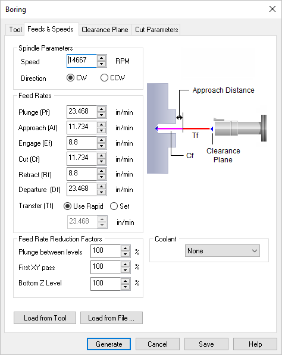

The following dialog allows you to select the appropriate Feeds & Speeds for the Turn Boring operation. In this tab, Spindle Parameters and Feed Rates can be specified. Speeds & Feeds can also be loaded from a File or from the Tool.
 Dialog Box: Feeds & Speeds tab, Turn Boring |
Speed
This is the rotational speed of the spindle expressed in RPM.
Direction
This determines the direction of spindle rotation and can be set to CW Clockwise or CCW Counter Clockwise.
|
Feedrate can be set in Units/Min or Units/Revolution for Turning Inserts.
Plunge (Pf)
This rate is the feed before the tool starts to engage in material. This is always vertical.
Approach (Af)
This is the feedrate used that prepares the cutter just before it starts engaging into material as it starts cutting. The approach motions are dependent on the method of machining.
Engage (Ef)
This is the feedrate used when the tool is performing an engage move. TURN Module sets this value to be 75% of the cutting speed.
Cut (Cf)
This is the feedrate used when the tool is cutting material
Retract (Rf)
The feedrate used when the tool is performing a retract move away from material. TURN Module sets this also to also be 75% of the cutting speed.
Departure (Df)
The feedrate used to retract the tool from the material.
Transfer (Tf)
This is the feedrate (in Units/Min), used for Transfer motions. Select Use Rapid to set this to the Transfer Feed value defined in the Feeds & Speeds section of the CAM Preferences dialog.
|
This sets Feed Rate Reduction Factors for Plunge Between Levels and the First XY pass.
|
Feeds & Speeds are defined when a tool is created using Create/Edit Tools from the Machining Objects Browser. Selecting this button loads the Feeds & Speeds from the tool that is selected for the current machining operation.
|
This loads the Feeds & Speeds values from the Feeds & Speeds Table file. This will display the Load Feeds from Table dialog box to make your selections.
Selecting OK from this dialog transfers the spindle speed and cut feedrate to the Feeds & Speeds tab. The plunge, approach, engage, retract and departure feeds are determined using a percent of the cut feed. The percent to use for transferring the computed cut feed can be set under Feeds & Speeds Preferences.
 Dialog Box: Load Feeds from Table |
Stock Material
Selecting a Stock Material and Tool Material displays the Surface Speed and Feed/Tooth. This information is contained in a feeds and speeds data file which can be edited to add newer materials.
Tool Material
Selecting a Stock Material and Tool Material displays the Surface Speed and Feed/Tooth. This information is contained in a feeds and speeds data file which can be edited to add newer materials.
Surface Speed
Selecting a Stock Material and Tool Material displays the Surface Speed and Feed/Tooth. This information is contained in a feeds and speeds data file which can be edited to add newer materials.
Feed/Tooth
Selecting a Stock Material and Tool Material displays the Surface Speed and Feed/Tooth. This information is contained in a feeds and speeds data file which can be edited to add newer materials.
|
The input variables - Work Diameter is automatically loaded from the Stock Radius. Based on this parameter and the Variables Limits parameters, the program computes Spindle Speed and Cut Feedrate (Cf). measured in Unites/Revolution. Changing the spindle speed modifies the cut feedrate.
|
Here you can set the Max Spindle Speed and Max Cut Feed (Cf) values. Once these two values are set, the Spindle Speed and Cut Feed calculated by this dialog will not exceed these values even if you attempt to enter higher values into the Computed Variables fields. To exceed these values, change them here or you must edit the operation or tool parameters manually.
|
The variables for Spindle Speed and Cut Feed (Cf) are computed for you based on the selections made in this dialog but will not exceed the values set in the Maximum Limits for Computation section of the dialog. These values are then assigned to the active toolpath operation or tool. You can override either of these variables and the other will update automatically. Since this dialog is a Feeds & Speeds Calculator, you cannot override both values. To do so, you must edit the operation or tool parameters manually.
|
|